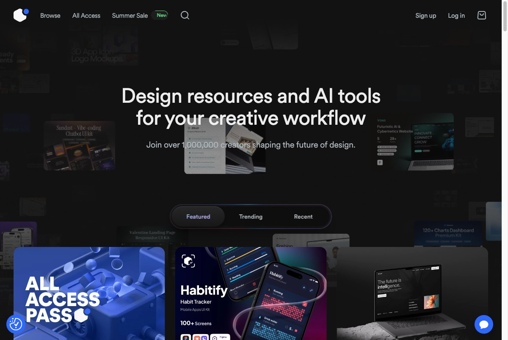
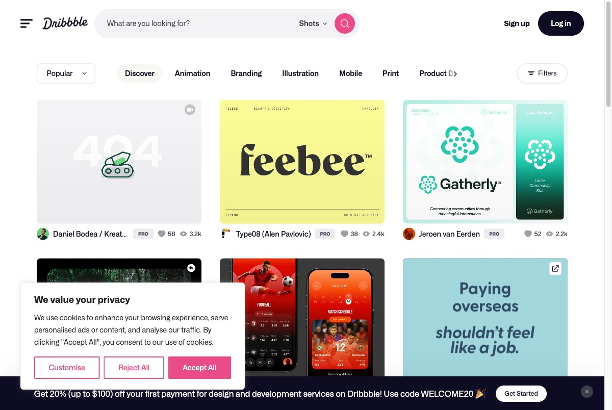
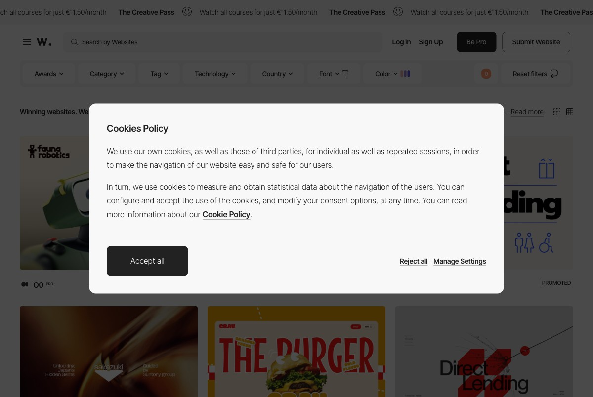
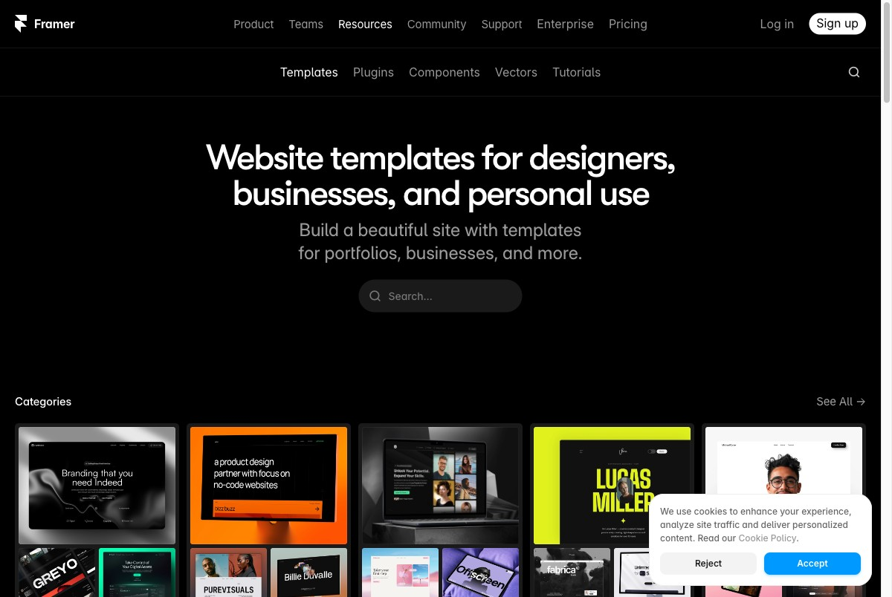
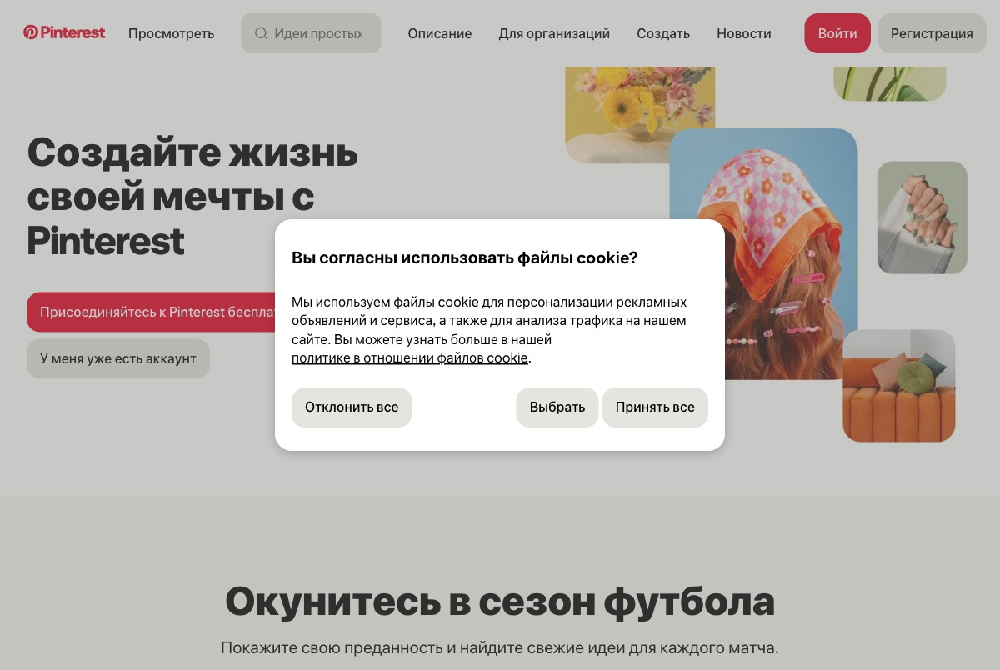

Competitive &
User Research
Аналіз конкурентів, бенчмарк візуальної конверсії, патерни карток і профілі персон.
Конкурентна карта
Три групи конкурентів: прямі (той самий продукт), софт (той самий JTBD), аспіраційні (еталони в категорії).
кюрований маркетплейс файлів, та сама аудиторія
підписочна модель, але масовий і незакюрований
авторська платформа, модель автора + покупця
той самий дизайнер, підписка, але без редагованих файлів
куди автори йдуть замість маркетплейсу
та сама аудиторія, але безкоштовно і без кюрації
натхнення, але без файлів; ми — наступний крок
той самий JTBD, але прив'язаний до одного інструменту
інспірація лендінгів без файлів
готові сайти, але тільки для Webflow
еталон UX: контент → підписка без friction
найполірованіший маркетплейс шаблонів
мінімалістичний UX: знайшов → один клік
еталон редакційних добірок і кюрації
візуальна мова «преміум» у вебі
Порівняльна таблиця 5×5
| Вісь | UI8.net | Envato Elements | Dribbble | Awwwards | |
|---|---|---|---|---|---|
| Аудиторія | Профі-дизайнери, фрілансери, агентства | Широкі креатори: дизайнери, відеоедитори, маркетологи | Дизайнери за інспірацією + клієнти, що шукають виконавців | Загальна аудиторія; дизайнери — мудборди | Профі-дизайнери, агентства, журі |
| Основа | Кюрований маркетплейс файлів (Figma, Sketch, XD) | Масова бібліотека + AI-інструменти | Галерея-портфоліо / маркетплейс таланту | Візуальний пошуковик / дошка натхнення | Рейтинговий каталог з журі-оцінками |
| Механізм | Подвійне превʼю на hover; теги по інструменту | Ліміт завантажень/день; Featured/Trending/Recent | Кольоровий фільтр (48+), PRO-бейджі | Нескінченна масонрі, алгоритм рекомендацій | Числова оцінка /10, Site of the Day/Year |
| Довіра | Лайки; Trusted by Airbnb/Google; автор | 1M+ авторів; логотипи підприємств | Лайки до 5.9k; PRO/PRO+ бейджі | Pin saves, підписники дошок | Журі, awards-лічильник |
| Монетизація | Разова $34–99+ · підписка $179–$699/рік | Підписка $179–$299/рік з лімітом | PRO-членство; найм; 0 файлів | Реклама; Shopping | PRO-членство; курси |
Скріни з живих сайтів
Зібрано через Playwright, червень 2026.





01 · Візуально важка сітка
Всі 5 будують каталог навколо великих карток. Текст вторинний — дизайнер сканує очима.
02 · Соціальні цифри на картці
Лайки, збереження, рейтинги — метрики залучення видно без кліку в деталі.
03 · Browse безкоштовно, цінність — платно
Friction перенесена максимально далеко від відкриття.
01 · Файли vs натхнення
UI8/Envato — робочі файли. Dribbble/Pinterest/Awwwards — ідеї для повторення вручну.
02 · Кюрація vs обсяг
UI8 — мала але відібрана. Envato — мільйони з низькою планкою. Kiwi йде за UI8.
03 · Несумісні бізнес-моделі
Kiwi єдиний, хто комбінує підписку без лімітів + разову покупку для однієї аудиторії.
Бенчмарк візуальної конверсії
Хто найкраще візуально комунікує «тут багато корисного, і я хочу це купити» — за перші 5 секунд?
Критерії оцінки
| # | Критерій | Що вимірюємо |
|---|---|---|
| C1 | 3-секундний тест | Зрозуміло без читання: що це, для кого, навіщо реєструватись |
| C2 | Щільність above the fold | Кількість якісних превʼю без жодного скролу |
| C3 | Якість і реалізм превʼю | Наскільки картка передає справжню цінність продукту |
| C4 | Ієрархія CTA | Наскільки очевидна головна дія |
| C5 | Соціальні докази | Кількість, якість і розміщення сигналів довіри |
| C6 | Масштаб бібліотеки | Чи відчуває користувач «тут є ВСЕ що мені треба» |
| C7 | Візуальна узгодженість | Типографіка, колір, ієрархія, ритм |
| C8 | Friction до першої цінності | Кроків/кліків до першого «вау»-моменту |
Оцінки (1–5)
| Критерій | Framer | Unsplash | UI8 | Mobbin | Dribbble |
|---|---|---|---|---|---|
| C1 · 3-сек тест | 5 | 5 | 4 | 4 | 3 |
| C2 · Щільність above fold | 4 | 5 | 4 | 4 | 4 |
| C3 · Якість превʼю | 5 | 5 | 5 | 4 | 4 |
| C4 · Ієрархія CTA | 5 | 4 | 4 | 4 | 2 |
| C5 · Соціальні докази | 3 | 4 | 4 | 5 | 4 |
| C6 · Масштаб бібліотеки | 4 | 5 | 4 | 5 | 3 |
| C7 · Візуальна узгодженість | 5 | 5 | 5 | 4 | 3 |
| C8 · Friction до цінності | 5 | 5 | 3 | 3 | 4 |
| TOTAL / 40 | 36 | 38 | 33 | 33 | 27 |
Unsplash
38Еталон. Пошук у центрі героя, одразу сітка. Unsplash+ через lock-іконки — не нав'язливо але очевидно. Нульова friction.
Framer Templates
36Герой — живі превʼю без пояснень. «Use template» — один клік. Слабкість: мінімум соціальних доказів.
UI8 · Mobbin
33UI8: преміальний стиль, але підписка захована. Mobbin: «300k+ screens» у заголовку — сильно, але контент за логіном.
Dribbble
27Антиприклад: два конкуруючих JTBD на одній сторінці. Жодного чіткого CTA. Не змішуй аудиторії.
5 патернів розміщення карток
Принципово різні UX-підходи — не варіації. Кожен: як працює / де / коли підходить / коли ламається.
Фото, ілюстрації — будь-який контент зі змінним aspect ratio.
Ціна і CTA не вирівнюються. При однаковому ratio — нічого не додає.
Маркетплейси файлів, шаблони. Швидке сканування: превʼю → ціна → інструмент.
Різні пропорції — зрізається. Немає способу виділити featured.
Передає довіру. Hero-слот — потенційно promoted placement.
Без редакції hero виглядає випадковим. UGC борються за featured-місце.
Передає масштаб бібліотеки одним екраном. Ідеально для subscription upsell.
Мала бібліотека — ряди напівпорожні. Горизонтальний скрол ховає контент.
Максимум інформації без кліку. Порівняння 3+ атрибутів одночасно.
Різко зменшує площу превʼю. Погано для browsing і натхнення.
Висновки для Kiwi MVP
Рішення по патерну карток
Лендінги — ландшафтний 16:9. Fixed grid = оптимальне використання простору.
Превʼю → ціна → інструмент → автор. Рівна сітка дає точки кріплення.
9 продуктів above the fold за 3 секунди. Головна ціль: скоротити час пошуку.
Якщо Kiwi запускає «Краще цього тижня» — 1–2 hero-картки + звична сітка. Комунікує кюрацію і довіру. Hero-слот = promoted placement для авторів.
Скріни 16:9 → masonry нічого не додає. Ламає порівняння ціни. Сигналізує «натхнення», а не «купівля».
Топ-3 конверсійних механізми → MVP
Content-first hero без слів
Перший екран — сама сітка продуктів. Дизайнер розуміє цінність очима за 2 секунди. Джерело: Unsplash + Framer.
Lock-icon gate замість login wall
Весь каталог відкритий без реєстрації. Subscribe-момент — тільки при Download, коли вже є емоція. Джерело: Unsplash.
Масштаб числом у hero
«500+ landing pages · Figma, Sketch, XD» — лічильники під пошуком. Число продає підписку. Джерело: Mobbin.
Що НЕ спрацює
Author PRO-badge як сигнал якості
Dribbble продає талант — PRO означає «варто найняти». Kiwi продає файл — «чи підійде мені цей шаблон?» Увага піде на соціальний статус замість якості контенту.
Замість: «Editor's Pick» від команди Kiwi — сигнал якості продукту, а не автора.
Немає жодного продукту, який одночасно кюрований + tool-agnostic + підписка без лімітів + робочі файли (не скриншоти). Це і є вікно для Kiwi.
Що і від кого беремо
| Механізм | Від кого |
|---|---|
| Подвійне превʼю на hover картки | UI8 |
| Content-first hero без тексту | Unsplash + Framer |
| Lock-icon gate при завантаженні | Unsplash |
| Масштаб бібліотеки числом у hero | Mobbin |
| Кольоровий + технологічний фільтр | Dribbble + Awwwards |
| Featured / Trending / Recent таби | Envato |
| «Trusted by» brand-логотипи | Envato |
| Editor's Pick замість author PRO-badge | Awwwards (адаптовано) |
| Масонрі скрол (ілюстрації, іконки — фаза 2) |
Персони
1 персона валідована інтерв'ю, 2 — гіпотетичні. Джерело зазначено для кожного блоку.
Єдина персона, підтверджена реальними даними (Інтерв'ю #1). Найвищоцінніший тип: щоденна звичка → висока retention, power user → word-of-mouth.
Виведена з брифу (junior у цільовій аудиторії) і конкурентного ландшафту. Жодних прямих даних — потребує валідації.
Агентства є в брифі (CLAUDE.md), але жодних даних про їх поведінку немає. Повністю гіпотетична — потребує окремих інтерв'ю перед будь-якими продуктовими рішеннями.
JTBD-матриця
Рядки — jobs, колонки — персони. Важливість 1–3, де не знаємо — [?]. Два додаткових стовпці: що закриває продукт і що роблять конкуренти.
Коли я знаю що треба зробити, але не хочу починати з нуля,
я хочу знайти готовий ресурс що відповідає стилю і потребам проекту,
щоб вийти на результат швидше, не жертвуючи якістю.
Матриця: jobs × персони
Важливість: 3 = критична · 2 = важлива · 1 = nice-to-have · [?] = немає даних
| Job | Куратор ✅ | Мисливець ⚠️ | Арт-директор ⚠️ | Функція в продукті | Конкуренти |
|---|---|---|---|---|---|
| RJ-1 · Знайти за стилем | 3Інтерв'ю #1: «нудний стиль — за запитами не було» | 2гіпотеза: теж шукає «під стиль клієнта» | [?]немає даних | Теги по настрою і естетиці; пошук за «мінімалістичний», «editorial» | Не закрито: UI8 — теги категоріальні ✅ validated; Envato — немає семантики; Dribbble — колір, не стиль |
| RJ-2 · Файл ≠ обкладинка | 3Інтерв'ю #1: «обкладинка добра, а дизайн посередній» | 2гіпотеза: кожна трата болить при разовій оплаті | [?]немає даних | Кілька реальних екранів з файлу на сторінці продукту | Не закрито: UI8 — один hero-shot ✅ validated; Envato — превʼю-мокапи; Framer — часткове live preview (свій конструктор) |
| RJ-3 · Зберегти миттєво | 3Інтерв'ю #1: «зберігаю в обране або скачую» | 1гіпотеза: проектний, не колекціонує наперед | 2гіпотеза: потрібно ділитись з командою | Обране / колекції; share підбірки | Частково: UI8 — favorites; Pinterest — boards; Dribbble — saves. Спільні колекції — ніхто |
| RJ-4 · Скачати без зупинок | 3Інтерв'ю #1: «якщо підписка — одразу скачую» | 2гіпотеза: хоче швидко, але без підписки зважує | [?]немає даних | Lock-icon gate замість login wall; one-click download при підписці | Частково: Unsplash — еталон lock-icon ✅; Framer — 1 клік. UI8 — підписка є але CTA захована |
| RJ-5 · Тримати на пульсі | 3Інтерв'ю #1: «я щодня моніторю нові надходження» | 1гіпотеза: проектний, не щоденний | [?]немає даних | Feed «Нові надходження»; сортування «Найновіші» | Закрито конкурентами: Envato — Featured/Trending/Recent; UI8 — New; Dribbble — Popular/New. Не є диференціатором |
| EJ-1 · Відчути «ось воно» | 3Інтерв'ю #1: «відклик візуально → переходжу» | 2гіпотеза: під дедлайном потрібне швидке попадання | [?]немає даних | Якість кюрації як основа; hover preview другого екрану | Частково: Framer, Unsplash — так. Але ніхто не поєднує з RJ-1 (пошук за стилем) |
| EJ-2 · Підписка окупається | 3Інтерв'ю #1: щоденний ритуал виправдовує плату | [?]немає даних про підписку | 2гіпотеза: виправдати перед керівництвом | Регулярне поповнення контенту; лічильники «нового цього місяця» | Частково: Envato — масштаб; Mobbin — «300k screens». Не закрито для кюрованої файлової ніші |
| EJ-3 · Не виглядати як «взяв шаблон» | 1senior, пишається що знаходить якісне першим | 2гіпотеза: страх generic-вигляду перед клієнтом | 2гіпотеза: репутація команди перед клієнтами | Editor's Pick / кюраційна мітка від редакції Kiwi | Частково: UI8 — кюрований без явної мітки. Envato — не закриває (масовий) |
| SJ-1 · Бути тим хто знає | 2Інтерв'ю #1: «якісні дизайни» = єдина рекомендація | 1гіпотеза | 2гіпотеза | Якість платформи в цілому; shareable посилання на ресурс | Не закрито прямо: конкуренти не вирішують цей job — тільки побічно через контент |
| SJ-2 · Задати напрямок команді | 1не його роль | [?]немає даних | 3гіпотеза: core job для цієї персони | Спільні колекції; share підбірки з командою | Не закрито ніким: UI8, Envato — персональні підписки без командного сценарію |
3 jobs у ядро MVP
Критерій: важливі для Куратора (primary, ✅ validated) і не закриті ринком.
Функції-кандидати на виліт
Не закривають жоден підтверджений job — або закривають тільки гіпотетичний. Додавати після валідації відповідного job.
Інвентаризація сутностей
Головні об'єкти, з якими людина має справу щоб закрити свої jobs. Сутність без job — секція «Під питанням».
| Поле | Тип | Job | Примітка |
|---|---|---|---|
| Назва | текст | RJ-1 | пошук по назві |
| Обкладинка | зображення | EJ-1 | перший візуальний фільтр · Інтерв'ю #1 |
| Екрани (2–5 шт.) | масив зображень | RJ-2 | реальні скріни з файлу, не мокапи · ключове поле |
| Категорія | Landing Page / Website / … | RJ-1 | груба навігація |
| Теги стилю / настрою | масив рядків | RJ-1 | «мінімалістичний», «editorial», «нудний» · головний диференціатор |
| Інструмент | Figma / Sketch / XD / … | RJ-1 | фільтр на каталозі |
| Ціна (разова) | число | RJ-4 | для не-підписників |
| Автор | посилання на Автора | EJ-1 | сигнал довіри |
| Дата додавання | дата | RJ-5 | для сортування «Нові» |
| Ліцензія | текст / enum | RJ-4 | комерційна, стандартна |
| Файл для завантаження | посилання | RJ-4 | .fig / .sketch / … |
| Editor's Pick | boolean | EJ-3 ⚠️ | кюраційна мітка від редакції · job гіпотетичний |
| Поле | Тип | Job | Примітка |
|---|---|---|---|
| Текстовий запит | рядок | RJ-1 | «мінімалістичний», «editorial», «нудний» — мова дизайнера, не категорія |
| Стиль / настрій | мультивибір тегів | RJ-1 | головний фільтр · підтверджений gap ринку |
| Інструмент | мультивибір enum | RJ-1 | Figma / Sketch / XD |
| Категорія | мультивибір enum | RJ-1 | Landing / Website |
| Ціна | діапазон / enum | RJ-4 | безкоштовно / платно |
| Сортування | Нові / Популярні | RJ-5 | «Нові» = головний для щоденного моніторингу |
| Результати | список Проектів | RJ-1 | повертає відфільтрований список |
| Поле | Тип | Job | Примітка |
|---|---|---|---|
| Список проектів | масив посилань | RJ-3 | |
| Дата збереження | дата | RJ-3 | для сортування всередині |
| Назва колекції [?] | рядок | RJ-3 ⚠️ | можливо потрібна тільки якщо кілька колекцій — не валідовано |
| Сутність · Поле | Тип | Job | Примітка |
|---|---|---|---|
| Підписка · Статус | активна / неактивна | RJ-4 | головне поле для gate-логіки |
| Підписка · Тип плану [?] | місячна / річна | EJ-2 | |
| Підписка · Дата закінчення | дата | EJ-2 | |
| Завантаження · Тип доступу | підписка / покупка | RJ-4 | |
| Завантаження · Файл | посилання | RJ-4 | |
| Завантаження · Ліцензія прийнята | boolean | RJ-4 | автоматично при скачуванні |
| Покупка · Сума | число | RJ-4 | ціна з поля Проекту |
| Покупка · Статус оплати | enum | RJ-4 |
Карта зв'язків
Під питанням — сутності без підтвердженого job
Не включати в роботу до валідації відповідного job.